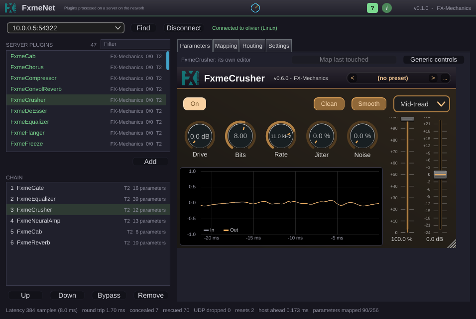

This chapter walks through the plugin’s window, then explains how it works with the DAW: automation, saving projects, bypass and latency.

From top to bottom:
The FX-Mechanics logo and version, a ? switch that turns the hover help on or off for all instances, and an information button.
The server’s address, Find and Connect (the button reads Disconnect while connected), and the connection status.
SERVER PLUGINS, the list of what the server offers, with its filter and the Add button; and CHAIN, your plugins in processing order, with Up, Down, Bypass and Remove.
Four tabs: Parameters, Mapping, Routing and Settings.
Statistics (section 5.8).
Type the server’s address (a name or an IP address, with :port if it does not use the default) or press Find and choose a server from the list that appears. Connect opens the session. While the plugin is not connected, the audio passes through untouched. The plugin remembers the last server you used, on this computer, and connects again when you reopen a project.
If the connection drops, the plugin reconnects by itself and resumes its session when the server still has it (section 5.10).
SERVER PLUGINS lists what the server offers. Each row shows the plugin’s name, its vendor, its input and output channels, and a tag T2, T1 or T0 that says how the plugin can be shown on this computer (chapter 8). Hover over a row to see why it has its tier.
The list is sorted by tier (T2 first, then T1, then T0) and by name inside each tier. While the plugin scans this computer for the first time, the order is by name only, and the tags read T?.
To find a plugin quickly, type a few letters in the Filter field above the list. Only plugins whose name contains every word you type remain. The first match is selected: press Return to add it. Esc clears the filter. Add (or a double-click) adds the selected plugin at the end of the chain.
CHAIN lists your plugins in the order the server processes them, from top to bottom. Select one to see its controls on the right. Buttons under the list:
Move the selected plugin in the chain.
Bypass the selected plugin, on the server.
Remove it. The state of the plugin is lost.
A plugin that cannot be loaded on the server shows the reason in red (a missing licence, a plugin that failed to start, ...).
The routing between the plugins is serial by default, as in a plain chain. To do parallel processing or sidechains, see chapter 6.
The tab shows the selected plugin.
A button above the controls switches between the plugin’s own editor and the generic controls. A last touched button next to it names the control you moved last in the plugin’s editor, with a menu to map it to an automation parameter (below).
The DAW sees FxmeNet as one plugin with 256 automation parameters, named p001 to p256 until they are used. When a plugin joins the chain, its automatable parameters take the first free entries, and the DAW shows them under the plugin’s name (for example “FxmeCompressor: Ratio”). You can automate them, and the DAW’s own controls, as with any plugin.
The Mapping tab lists every entry in use and what it controls. To free entries, select them and press Unmap, or use Unmap all.
To map a parameter by hand, use one of the two methods:
Note. Automation lanes in the DAW belong to the numbered entries. When you remove a plugin, its entries stay free but keep their lane. FxmeNet does not give a used entry to the next plugin you add (unless you map it by hand or all 256 have been used), so a recorded automation cannot silently drive another plugin’s parameter.
The Settings tab has three parts.
Block size N and Network budget D, with the latency they give (chapter 7).
Silence in-flight audio at reset: when the DAW restarts playback or jumps, drop the audio still on its way back from the server, so you hear silence for the length of the latency (as a local plugin clearing its delay line) rather than the tail of the previous position. Log transport events writes what the audio thread sees around transport events, concealed blocks included, to fxmenet-client-events.log in the FX-Mechanics settings folder; it is for diagnosing problems.
The scan of the plugins installed on this computer, used for the plugins’ own editors. Rescan looks for new or changed plugins; Full rescan examines everything again; Folders… adds folders to search beside the standard VST3 ones.
The line at the bottom of the window gives:
What FxmeNet reports to the DAW, in samples and milliseconds.
The last measured time for a message to reach the server and come back.
Blocks that came back too late and were replaced.
Blocks that would have been concealed but arrived in time after a short wait.
Audio messages the client threw away because they could not be put together: pieces missing, damaged or too large. It should stay at zero on a healthy network.
How many times the DAW reset the plugin (playback start, stop or a jump in the timeline). Each time, the server resets its chain at the same point of the stream.
How far the DAW processes audio ahead of real time, in milliseconds. It is 0 when the DAW calls the plugin at the pace of the sound card, and larger when the DAW renders with a read-ahead buffer.
How many of the 256 entries are in use.
A concealed count that rises steadily means the server or the network cannot keep up with the chosen settings (chapter 7).
A project that uses FxmeNet needs the server to be reachable and to have the same plugins installed. If a plugin is missing on the server, its row in the chain shows an error and the audio is not processed by it. The audio goes through that position of the chain unchanged, as if the plugin were bypassed, and the rest of the chain keeps working. A future release will let you optionally compute the chain locally on the client when the server is not available.